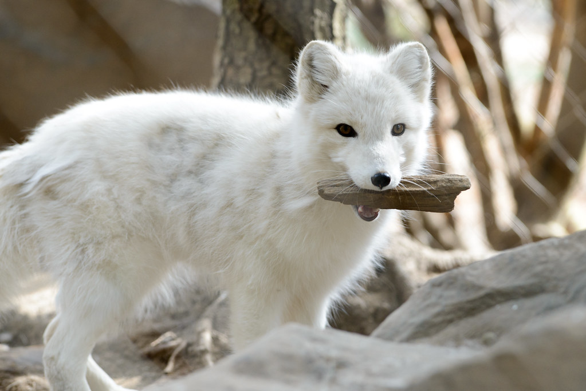
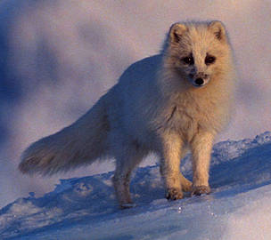

Learn More About the Arctic Fox
Back to Zoo
Back to Home
Habitat
Arctic foxes are native to the Arctic tundra, thriving in some of the coldest environments on Earth. They are found in: North America (Alaska, Canada, Greenland), Eurasia (Russia, Scandinavia, Iceland), and High Arctic islands. They inhabit tundra regions, coastal areas, and pack ice, where their thick fur and small body extremities help them conserve heat in freezing temperatures.
Diet

Arctic foxes are omnivores with a diet that varies by season: Winter: They scavenge on leftovers from polar bear kills and hunt small mammals under the snow. Summer: They hunt lemmings(primary food source), birds, eggs, fish, and they also eat berries and vegetation. When food is scarce, they will store food in caches or even eat carrion and marine life washed ashore.
Conservation

Arctic foxes are classified as Least Concern globally, with stable populations in most areas. However, some regional populations face threats, particularly in Scandinavia, where they are endangered due to: climate change, competition with red foxes (which are expanding into Arctic regions), and human activities (hunting, habitat disruption).